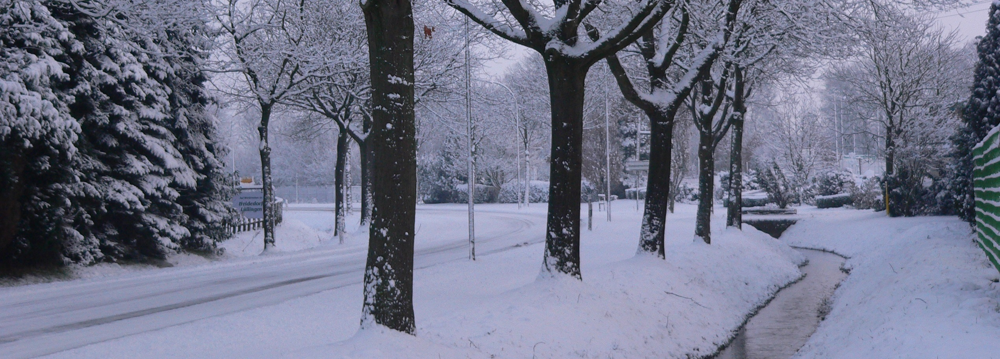
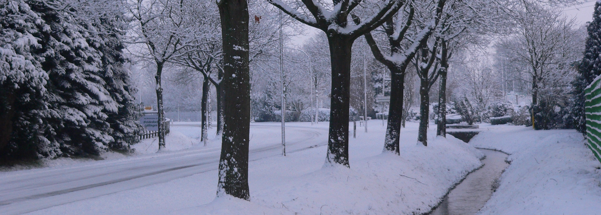

dachten sich im Januar 1998 einige Lüllinger Bürger und luden zu einer Versammlung in den Landgasthof Luyven ein, mit dem Ziel, die Mitbürger zur Verschönerung des Dorfes zu bewegen. Dazu waren keine Mühen erforderlich, denn über hundert Mitbürger erschienen und sprühten nur so vor Ideen. So wurde an diesem Abend der Natur- und Heimatverein Lüllingen aus der Taufe gehoben, mit direkt 105 Mitgliedern.
Die hauptsächlichen Aufgaben des Vereins sollten die Dorfverschönerung, die Förderung der Dorfgemeinschaft, sowie die Pflege der Natur und Heimat sein.
Direkt im Februar 1998 wurden die für den Niederrhein typischen Kopfweiden am Sportplatz und am Nierskanal von Vereinsmitgliedern gesetzt. Die Weiden werden regelmäßig geschnitten, wobei es immer Abnehmer für das Schnittgut gibt, wie z.B. den Walbecker St. Luzia Kindergarten und auch Privatpersonen.
Im Mai 1998 wurden unansehnliche Beete im Bereich im Bereich der Kreuzung in der Dorfmitte und an der Twistedener Str., die viele Bürger schon lange gestört hatten, vergößert und mit Sonnenblumen bepflanzt.
Die Bepflanzung wurde im September entfernt und durch die im Ort angebauten Heidepflanzen ersetzt. Das wird seitdem jährlich im festen Rhythmus erledigt, der Natur- und Heimatverein pflanzt und die Feuerwehr gießt an. Nach getaner Arbeit gibt es natürlich Kaffee und Kuchen für die fleißigen Helfer.
Am 30. April 1998 wurde in Lüllingen zum ersten Mal ein Maibaumsetzen auf dem ehemaligen Parkplatz veranstaltet. Die Veranstaltung wurde hervorragend angenommen, der Parkplatz war voller Menschen, das Spanferkel war super und für die Kinder wurde auch gesorgt. So wurde dieser Termin eine feste Institution im Dorfleben und ein finanzieller Baustein für den Verein.
Im Laufe der Jahre wurde das Maibaumsetzen perfektioniert, eine Lokomotive wurde mit Jugendlichen gemeinsam gebaut, eine Feuerstelle für Stockbrot erstellt. Auf diese Weise wird versucht, Jugendliche zeitig in das Dorfleben einzubinden.
Im Frühjahr 1999 wurde in Zusammenarbeit mit der Gärtnersiedlung ein Heidegarten angelegt, der ein paar Jahre später schon vergrößert wurde.
Der Heidegarten liegt direkt an der Straße nach Kevelaer und wird sehr viel von Radtouristen zur Pause genutzt. Die im Ort angebauten Pflanzen kann man hier bewundern, die Pflege wird bis heute ausschließlich von der Nachbarschaft "Gärtnersiedlung" ausgeführt.
Später wurden vom Natur- und Heimatverein Nistkästen aufgehängt, die von Wolfgang Raupach beaufsichtigt werden.
Auf der Gründungsversammlung hatte sich spontan eine Mundartgruppe zusammengefunden, die das "Kluser Platt" lebendig erhalten wollen.
Die Gruppe veranstaltete im November 1999 zum ersten Mal einen Mundartabend "Kluser Platt van Kluser Lüy". Dieser Abend war ein voller Erfolg, der seitdem alle zwei Jahre wiederholt wird. Die Karten hierfür sind im Vorverkauf immer sehr schnell vergriffen, ein schöner Abend garantiert. Auch dieser Abend ist ein solides finanzielles Standbein des Vereins.
Im Jahr 2000 wurden die Ortsschilder angeschafft. Nach langen Überlegungen und vielen Entwürfen enschied sich der Vorstand für ein farbenfrohes Schild, auf dem sich in der einen Ecke eine Birke, als typische Baum unserer Gegend befindet. Im Schein der aufgehenden Sonne erkennt man verschiedene Heidepflanzen, die in Lüllingen angebaut werden, wie z.B. Erica tetralix, die Calluna vulgaris und die Erica gracilis. Durch die Begrüßung "Willkommen im Heidedorf Lüllingen" entstand der mittlerweile etablierte Begriff "Heidedorf Lüllingen".
Zwischendurch werden auch Veranstaltungen für die Mitglieder angeboten, die nicht mit Arbeit verbunden sind, wie z.B. eine Besichtigungstour zu den Wildgänsen an der Bislicher Insel.
2008 wurde eine Neubürgerbegrüßungsbroschüre erstellt, in der sich alle Vereine vorstellen. Jeder Lüllinger erhielt diese Broschüre. Der Terminkalender mit allen Lüllinger Aktivitäten wird jährlich erneuert und zu Jahresbeginn an alle verteilt.

Vor Jahren wurden mal im Winter hunderte von Narzissenzwiebeln entlang der Durchgangsstraßen in die Erde gedrückt. Seitdem ist es eine helle Freude zur Zeit der Narzissenblühte durch unser Dorf zu fahren. Rechts und links der Straßen leuchten die gelben Blühtenkelche zu Hunderten. Man fährt automatisch langsamer, um die Pracht zu bewundern.
Zu den Zukunftsplänen gehörten immer die Verschönerungen der Ortsmitte und des alten Spielplatzes. Dies war natürlich ein schwieriges Angehen, was von langer Hand geplant sein wollte. Es gab einen Dorfentwicklungsplan, der wunderbare Ideen beinhaltete, den Parkplatz und Spielplatz in einen wunderschönen Dorfplatz für Jung und Alt zu verwandeln. Die ortsansässige Firma "Landgard" signalisierte schon zeitig Unterstützung, doch die Stadt Geldern wehrte sich hartnäckig, da die finanziellen Mittel fehlten. Das Vorhaben schien sich nicht verwirklichen zu lassen.
Im Rahmen des Konjunkturplanes II stand dann plötzlich Geld zur Verfügung. Der Stadtrat Geldern wurde sanft durch eine Lichterdemonstration bei einer Ratsversammlung Ende 2009 überredet, das Geld doch für Lüllingen auszugeben.
Was die Lüllinger ertäumt hatte, wurde plötzlich wahr. Das Projekt "Dorfplatz" lief im Jahr 2010 an, natürlich unter der tatkräftigen Mithilfe der Lüllinger Bürger. Der alte Spielplatz wurde ins Neubaugebiet "Kerstenweg" verlegt und das Altholz gerodet.

Jung und Alt packten mit an. So fand das Projekt "Dorfplatz" im Juni 2011 seinen Abschluss mit einer schönen Dorfplatzeinweihung. In Zukunft ist es unser Bestreben, unseren schönen Dorfplatz zu pflegen und unseren kleinen Kindern die Spielmöglichkeit zu sichern. Der Spielplatz für ältere Kinder bleibt im Neubaugebiet, vor allem wegen des Bolzplatzes. Im Winter wird hier auch bei Minusgraden kurzfristig eine Eislauffläche mit einfachen, aber effektiven Mitteln geschaffen. Ein Highlight für Kinder und Jugendliche.
Für die nächste Zeit ist angedacht, mit einer Gruppe Jugendlicher eine Brutmöglichkeit für den Eisvogel am Nierskanal zu bauen. Der Eisvogel nistet in Höhlen, die sich in wassernahen, steilen vorzugweise lehmigen oder sandigen Böschungen befinden. Die Höhlen bestehen aus einem etwa 50 - 100 cm langen Tunnel, der in einem baseballförmigen Brutkessel endet. Der Eisvogel greift gerne auf bestehende Höhlen zurück. Da diese nicht vorhanden sind, soll der Natur hier auf die Sprünge geholfen werden. Da das Nahrungsangebot, kleine Fische, im Nierskanal vorhanden ist und der Eisvogel auch öfters gesehen wird, möchte der Natur- und Heimatverein ihm eine Brutmöglichkeit schaffen, um dem wunderschönen Vogel eine Bleibe zu bieten.
So bleibt für die emsigen Mitglieder des Natur- und Heimatvereins immer etwas zu tun und wir packen es auch an.